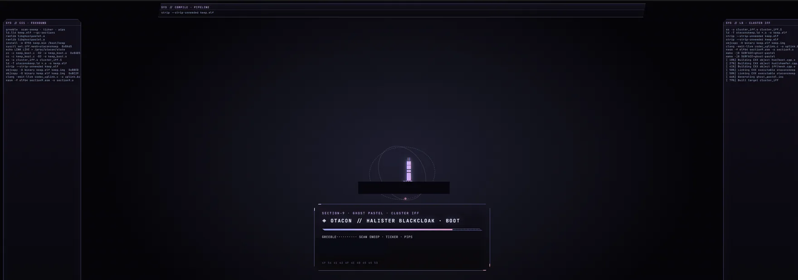
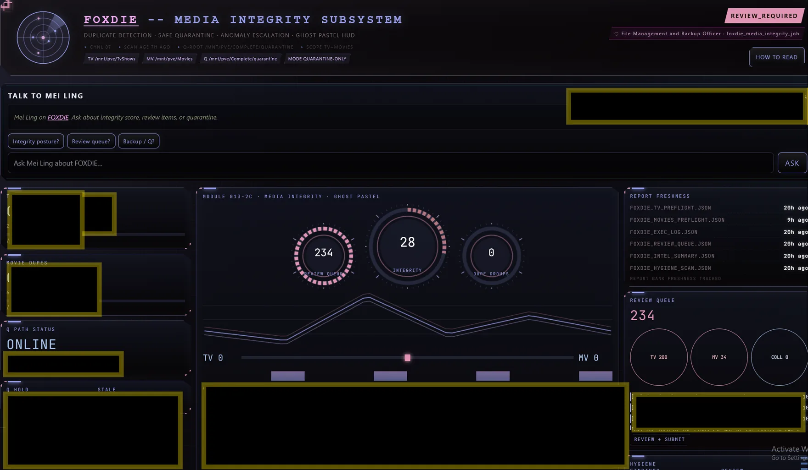
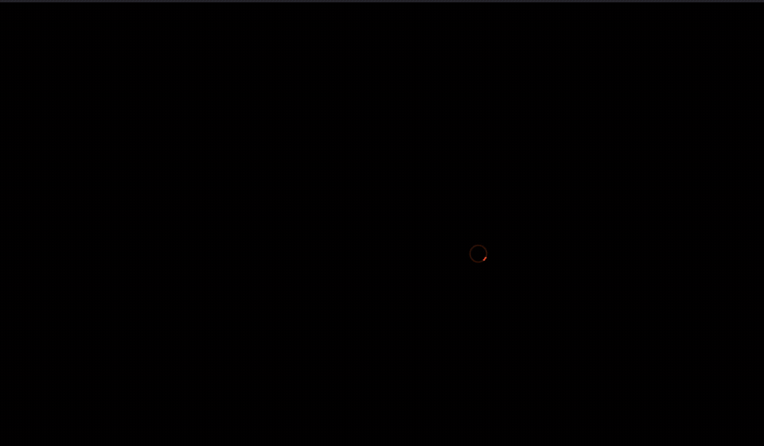

Runs for free on your own machine. Never costs anything.
Run your own persistent AI agents on your computer, with memory, tools, voice, automation, and a local web interface. Lite is the complete free public foundation of OtaconsKeep.
No license key. No artificial usage cap. Your available AI capabilities depend on your hardware and the models you choose to run.
Runs for free on your own machine. Never costs anything.
Automatically colorize black-and-white manga images in Firefox using a GPU on your own computer. The browser sends the image to your local AI9 service, your GPU processes it, and the colorized result is returned to the page.
OtaconsKeep family-adjacent. Covered under AI9. Does not require Lite Core.
Expands the OtaconsKeep core into a deeper multi-agent system with specialized agents, richer persistent relationships, advanced coordination, and additional creative and automation capabilities.
Some Expansion capabilities install directly with the core, while GPU-intensive creative features require additional local services such as Docker and compatible GPU hardware.
A visual AI command center for running named local AI teammates from one shared workstation. Talk to agents, assign work, watch activity, and manage local AI workflows from a cinematic desktop interface.
Built around local models and the OtaconsKeep ecosystem, with supporter access to the install vault.
Runs for free on your own machine. Never costs anything.
Keep AI work moving when models hit limits, fail, or need to be switched. KeepRoute preserves mission state and lets work continue across compatible AI models instead of forcing you to start over.
Built on OmniRoute with OtaconsKeep mission state, checkpoints, recovery, and handoff behavior.
Otaconskeep Lite (built on Otacon Core) is a local-first AI ecosystem for running persistent AI agents on hardware you control. Give agents identities, memories, voices, rooms, and capabilities, then connect them to local models, media, automation, compute nodes, and the rest of your homelab.
Your agents. Your hardware. Your data. Your Keep.
AGENTS // MEMORY // VOICE // ROOMS // LOCAL AI MEDIA // AUTOMATION // GPU NODES // HOMELAB
CREATED BY: Antonio G. Garcia · Built for the Keep.
About describes why measurable emotion matters. Engineering holds the math (state vector, blend/decay), VCRM, and MOCK analysis until Verified evidence attaches. Today: honesty over theater.
One Otacon install is the full normal path: Core + chat model + voice trainer. Speech-to-text and image/video generation still need their own providers when you want those (see the status table).
Real Reference Keep // Live System
This is not a concept UI.
These are screens from Antonio G. Garcia's running Otaconskeep reference environment, not product mockups. Otacon Core provides the foundation; the Reference Keep shows how far that foundation can be taken.
Reference Keep: not every system shown here ships with Otacon Core today
Inside the Keep
A tour of the real rooms
Ten of the strongest, safest surfaces from the live Keep. Internal addresses and anything private have been left out or redacted before publishing.
Explore the full Keep: 42 screens
The Keep doesn’t wait for you to check in.
When something matters, the right agent can bring it to you.
Agent notifications delivered where you already are.
Otaconskeep doesn’t require you to constantly watch a dashboard. Agents can push useful updates directly into Discord: morning briefings, appointments, completed AI jobs, security and media alerts, and operational status from across the Keep. The goal is simple: important information finds you instead of you having to go looking for it.
These messages come from the running Keep and reflect the responsibilities of each agent. Naomi can surface upcoming appointments, Otacon can deliver system and intelligence briefings, and agents such as Albedo can report changes in queues, automation, and Project REX activity. Routine work stays quiet; useful changes get surfaced.
Screenshots from the running reference Keep. Discord relay is not an Otacon Core installer feature
Take the Keep Tour
Step through it yourself
Hear the Keep
Real voices trained for the agents that live here
Four agents, four trained voices, one welcome. Press play when you're ready. Nothing here plays on its own.
Chnl Codec · Ghost Pastel · Personnel Voice ArchiveStanding By


Voice Link Standby
Otaconskeep
Press play to begin
Otacon
Systems / Engineering
Mei Ling
Operations / Records
Naomi Hunter
Research / Continuity
Halister Black Cloak
Project REX / Governance
0:00
0:00
These are locally trained agent voices from the running Otaconskeep reference environment.
Voice Models // Local // Self-Hosted
01 // The Keep
More than a chatbot
A Keep is a private AI environment built around you. Instead of one generic assistant, Otacon is designed around persistent agents with their own identities, conversations, memories, voices, and capabilities: agents that can live in their own rooms and interact with services running across your own machines. Start with a local AI assistant. Grow it into a system that coordinates models, GPUs, media services, smart-home systems, search, voice, and automation.
YOUR KEEP
│
┌─────────────┴─────────────┐
│ │
AI AGENTSSERVICES
│ │
┌───────┼───────┐ ┌────────┼────────┐
│ │ │ │ │ │
Agent A Agent B Agent C Media Home Search
│ │ │ │ │ │
Memory Memory Memory Plex HA SearXNG
Voice Voice Voice *arr
Room Room Room
│ │ │
└───────┴───────┘
│
CAPABILITY ROUTER
│
┌────────┼──────────┐
│ │ │
Local GPU Remote
Models Workers Nodes
Agent names above are illustrative: this is the architecture shape, not a specific deployment.
02 // Proof
Not a concept. A working reference environment.
The public project is derived from Antonio G. Garcia's working self-hosted environment, where AI agents coexist with local models, dedicated GPUs, voice systems, media automation, containers, search, smart-home infrastructure, and automated operations.
Reference Keep: not all components are included in Otacon Core
Persistent character/agent rooms with independent identity, memory, and voice
Local LLM inference with hardware-aware model selection
Dedicated GPU compute and remote worker nodes
Image and video generation pipelines
Voice synthesis and voice satellites
Containerized services with health monitoring and automated recovery
Media automation (download/library automation, Plex/Jellyfin, request systems)
Search/research services
Home Assistant and physical-device integrations
Discord and external messaging interfaces
Resource arbitration and GPU reclamation across machines
Otacon Core installs the foundation. The Keep Blueprint shows what that foundation can become.
03 // Growth Path
Where the foundation leads
Install Otacon
↓
Local AI
↓
Persistent Agents
↓
Memory + Voices
↓
AI9 Manga Colorizer
↓
KeepRoute
↓
Keep Desk Grok Bot alternative
↓
Otacon Expansion
↓
Agent Rooms
↓
Tools + Capabilities
↓
Media + Automation
↓
GPU / Remote Nodes
↓
Your Own Keep
Otacon Core installs the foundation. AI9 is family-adjacent (no Lite Core required). KeepRoute keeps long AI missions alive across models. Keep Desk is OtaconsKeep’s local Grok Bot–class command deck. Expansion and the Keep Blueprint show how far that foundation can grow.
Otacon Core / AI9 / KeepRoute, today Keep Desk, local Grok Bot alternative Otacon Expansion, installable (licensed) Keep Blueprint direction
The licensed layer on top of Otacon Core: five-agent roster, Command Deck / Codec, and guided Genome + Video Studio setup. Installable today for chatting with Aria after Core + Expansion Setup. Genome Voice Trainer and Video Studio are optional sidecars, they need GPU / Docker (or portable Comfy) and are not READY out of the box on every fresh PC. Read the honest status & install path.
Aria
Coordinator
Dashboard + Codec
Vector
Systems
War Room
Ledger
Continuity
Intel Board
Muse
Creative
Video Studio
Sentry
Security
Home Automation
Agents move — Aria's motion pack, hand-produced as the reference set every default agent's generator matches:
One roof, five public paths. Lite (Otacon Core) is the free foundation with Default Model + Voice Trainer. AI9 colorizes manga on your GPU with no Lite required. KeepRoute keeps long AI missions alive. Keep Desk is the local command deck. Expansion / Premium is the licensed multi-agent layer.
FREE
Install OtaconsKeep Lite
One click
Runs for free on your own machine. Never costs anything.
Otacon Core on your hardware: agents, memory, Ollama + a VRAM-sized chat model, and Genome Voice Trainer. Install once; it starts itself after that.
If something below happens, do not close everything and start over. Setup is still working.
Windows SmartScreen may say it protected your PC. Click More info, then Run anyway.
Administrator / Yes popup is required. Click Yes. A new Setup window may open, that is expected. The old window can stay open or say setup continues in the new one.
Long waits (minutes with a black window and progress text) are normal while Windows enables Linux and Otacon installs. Do not close the window.
Restart required does not mean install failed. Save your work, restart, then Setup should show WELCOME BACK and continue. Or double-click the same OtaconsKeep-Setup.bat again.
Ubuntu username / password screens are part of Windows Linux setup, not a crash, and not Proxmox.
Do not openlocalhost:5757 until the window says OTACON IS READY. Opening early looks broken even when install is fine.
If you see SETUP NEEDS HELP, that is recovery, not a crash. Press R to retry, O for logs, or X to exit. The window should stay open.
Saves as OtaconsKeep-Setup.bat. Double-click it, approve the Windows prompt, and follow the on-screen guide. One restart may be required. Otacon auto-starts after install.
Use this button only. Do not open raw GitHub and Save As, that can corrupt the installer encoding.
Paste in a terminal. Asks for sudo once. Chat model tiers: under 6GB → qwen2.5:1.5b · ≥6 → 3b · ≥8 → 7b · ≥16 → 14b.
Lighter install (skip chat model / voice trainer): set OTACON_INSTALL_DEFAULT_MODEL=0 and/or OTACON_INSTALL_VOICE_TRAINER=0 before the command.
FREE
Install AI9 Manga Colorizer
One click · Windows
Runs for free on your own machine. Never costs anything.
Local GPU manga colorization + Firefox reading extension. Covered under AI9 (OtaconsKeep family-adjacent). Does not require Lite Core. Same pattern as Otacon Setup: download one file from this site, double-click it. No Command Prompt. No ZIP required.
Saves as AI9-Setup.bat. Open your Downloads folder and double-click it. Approve the Windows prompt if asked. It installs Git Bash if needed, detects your NVIDIA GPU, and finishes the rest. Do not type the filename into Command Prompt.
Advanced / already cloned the repo?
From the extracted AI9 folder, double-click install_ai9.bat, or in Git Bash run ./install_ai9.sh. Same installer.
Installs Git / Python / Firefox if missing · picks the right PyTorch CUDA build for your GPU · downloads and verifies model weights · runs a real GPU inference test · registers auto-start. Requires an NVIDIA GPU with a current driver.
FREE
Install KeepRoute
1.0 stable
Runs for free on your own machine. Never costs anything.
Mission-state orchestration on top of OmniRoute: checkpoints, recovery, and cross-agent continuation when a model hits a limit. Does not replace Lite; pairs with it.
UI package + OmniRoute compose path, provider keys, and smoke checks live on the KeepRoute page.
Why OmniRoute
Why we built on OmniRoute instead of Jev or a cloud-only decision router — read the comparison.
$1
Install Keep Desk
Supporter vault
One-time donation required · $1
Local Grok Bot–class command deck: named teammates, LIVE browser, jobs, and Why dossiers on hardware you own. Install vault unlocks after a $1 Buy Me a Coffee donation (Premium seats included).
The public family under one roof: Lite agents, mission routing, a local command desk, Expansion, and AI9. Otacon Core is the free foundation (Default Model + Voice Trainer). KeepRoute keeps long jobs alive on OmniRoute. Keep Desk is the supporter command deck. Expansion deepens the multi-agent layer. AI9 colorizes manga on your GPU and does not require Lite Core.
OTACONSKEEP
│
├── OTACON / LITE: agents · memory · identity ·
│ │ orchestration · Default Model (chat) ·
│ │ Voice Trainer (Genome Piper)
│ │
├── KEEPROUTE: mission state · checkpoints ·
│ │ recovery · OmniRoute data plane
│ │
├── KEEP DESK: command deck · LIVE browser ·
│ │ named teammates · Why dossiers
│ │
├── EXPANSION / PREMIUM: five-agent roster ·
│ │ Deck / Codec · optional Genome + Video Studio
│ │
└── AI9 MANGA COLORIZER: local GPU
manga colorization · Firefox extension
(family-adjacent · no Lite Core required)

AI9 Manga Colorizer // B&W in → color out // LOCAL GPU // SELF-HOSTED · Watch video
FREEProject 01 · Agent Platform
OtaconAI Ecosystem
Runs for free on your own machine. Never costs anything.
Persistent AI agents with identity, memory, voice, and local orchestration. Normal Lite install includes Default Model (Ollama chat) and Genome Voice Trainer. Expansion, KeepRoute, and Keep Desk build on that foundation. See what you get today and the foundation path.
Runs for free on your own machine. Never costs anything.
Keeps AI work moving when models hit limits. Missions get IDs, checkpoints, and handoff so you are not rebuilding progress by hand. Built on OmniRoute; OtaconsKeep owns the mission layer.
Checkpoints, recovery, cross-agent continuation
Local-first policy for trivial work
Why OmniRoute over Jev — documented on the KeepRoute page
Named AI teammates on a computer you own: Command Deck UI, LIVE browser, jobs, and Why dossiers. Grok Bot energy, local-first. Supporter install vault (Premium seats unlock it too).
Five-agent roster, Deck / Codec, relationship engine, optional Genome + Video Studio. Requires Core; GPU sidecars need hardware. Honest status before you buy a seat.
Runs for free on your own machine. Never costs anything.
AI9 is the manga colorizer. Local GPU pipeline for Firefox: detect your NVIDIA card, pick the right CUDA/PyTorch build, colorize manga pages on-device. No cloud API in the loop. Family-adjacent; does not require Lite Core. The GIF above is a real capture from that pipeline.